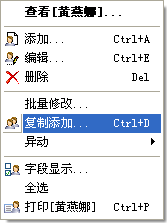
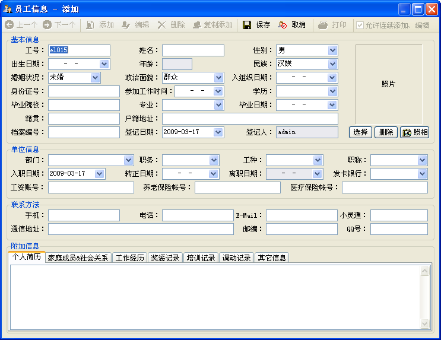

| 档案操作 - 添加、复制添加 |
|
档案添加是人事档案管理系统的一个基本功能。在秋风人事档案管理系统中，你有六种方法添加一个员工档案： 1．菜单的[档案管理]->[添加]。 2．工具栏里的[添加]按钮。 3．员工信息列表的右键菜单之[添加]菜单项。 4．员工信息列表的右键菜单之[复制添加]菜单项。此功能只有在您选择一个员工信息时才有效，它将以您选择的员工信息为基本信息，添加一个除工号、姓名、照片之外的其它信息与当前员工一样的一个员工档案。  5．你在浏览一个员工时，它上面的[添加]工具按钮可用。 6．你在浏览一个员工时，它上面的[复制添加]工具按钮可用。 以上几种方式您都可以使用，但更方便的是可以用快捷键操作：添加功能的快捷键是Ctrl+A，而复制添加的快捷键为Ctrl+D。 无论您用哪种方式添加，系统都会打开员工信息窗体，其中显示为员工添加状态信息；在您添加完成一条档案信息后，必须点击[保存]按钮(Ctrl+S)，才能够存储；若您不想添加档案信息，则可点击[取消]按钮(Esc)来取消当前档案信息的添加。其中年龄信息根据生日自动计算，离职日期则由[人事变动]->[离职]操作写入。如下图所示：  当处于添加、复制添加及编辑状态时，只有保存、取消功能可以使用。 您添加一下员工时，其工号、姓名与部门必须填写或选择，否则员工档案信息将不能被添加。而此页面中的部门信息，是在部门设置中所设定；民族、婚姻状况等信息，是在分类信息中所设定。 当您在[系统]->[选项]的基本参数中勾选[新加员工自动编号]且设定工号前缀后，则新添加员工时，工号自动计算。 若您的计算机中连有摄象头，则可以使用照相功能。 特别说明：您在添加一个新员工时，此界面上有一个选项[允许连续添加、编辑]，它在添加档案时的作用是：当您勾选它时，在保存一条记录后， 窗体又会执行添加操作，您可以连续添加记录。 小提示：您在添加信息时，可以按Tab键操作，在[姓名]之后跳到[身份证号]，您在输入[身份证号]后，[出生日期]、[性别]及[籍贯]会自动填充。 |